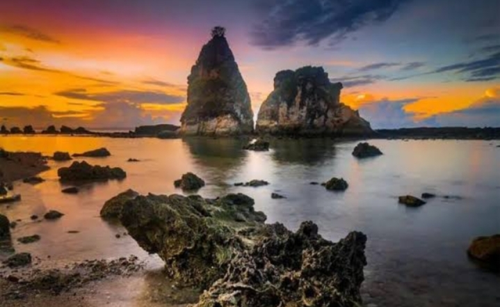

Sejarah

Banten memiliki sejarah panjang yang dimulai sejak masa kerajaan Hindu-Buddha. Pada masa itu,
wilayah Banten merupakan bagian dari Kerajaan Tarumanegara yang berkuasa pada abad ke-5 hingga abad ke-7.
Pengaruh Hindu-Buddha terlihat dari prasasti-prasasti yang ditemukan di wilayah ini, menunjukkan bahwa Banten merupakan
pusat peradaban penting pada masa tersebut. Setelah runtuhnya Tarumanegara, Banten menjadi bagian dari Kerajaan Sunda,
yang juga bercorak Hindu-Buddha. Wilayah ini kemudian berkembang menjadi salah satu pusat perdagangan yang strategis,
berkat posisinya di jalur perdagangan internasional yang menghubungkan India, Tiongkok, dan wilayah Asia Tenggara lainnya.
Banten memiliki sejarah yang kaya, dimulai dari masa kerajaan Hindu-Buddha hingga era Islam dan kolonialisme.
Pada masa Hindu-Buddha, wilayah Banten berada di bawah kekuasaan Kerajaan Tarumanegara, yang meninggalkan bukti berupa prasasti-prasasti kuno.
Setelah runtuhnya Tarumanegara, wilayah ini menjadi bagian dari Kerajaan Sunda dan dikenal sebagai salah satu pusat perdagangan penting.
Letaknya yang strategis di jalur pelayaran internasional menjadikan Banten tempat persinggahan kapal-kapal dagang dari berbagai negara seperti India,
Tiongkok, dan Arab. Keberadaan Banten sebagai pusat perdagangan terus berkembang, bahkan hingga masa transisi menuju era Islam.
Geografis

Provinsi Banten terletak di ujung barat Pulau Jawa dan memiliki letak geografis yang sangat strategis.
Di sebelah utara, Banten berbatasan dengan Laut Jawa, sementara di sebelah timur berbatasan dengan Provinsi DKI Jakarta dan Jawa Barat.
Di sebelah selatan, wilayah Banten berbatasan dengan Samudra Hindia, sedangkan di sebelah barat berbatasan langsung dengan Selat Sunda yang memisahkan Pulau Jawa dan Pulau Sumatra.
Lokasi strategis ini menjadikan Banten sebagai gerbang utama antara Pulau Jawa dan Sumatra melalui Pelabuhan Merak.
Selain itu, wilayah geografis Banten meliputi dataran rendah di bagian utara yang cocok untuk kegiatan ekonomi dan perkotaan,
serta pegunungan di bagian selatan seperti Pegunungan Halimun dan kawasan Ujung Kulon yang menjadi area konservasi dan pariwisata.
Wisata
Banten memiliki sejumlah destinasi wisata alam yang memukau,
salah satunya adalah Pantai Sawarna dan Negeri di Atas Awan Citorek
Pantai Sawarna

Pantai Sawarna terletak di Kecamatan Bayah, Kabupaten Lebak, dan terkenal dengan keindahan pasir putihnya yang membentang
sepanjang pantai. Ombaknya yang besar juga menjadi daya tarik bagi para peselancar, baik dari dalam maupun luar negeri.
Selain itu, pantai ini dikelilingi oleh tebing-tebing karang yang menjadikannya semakin eksotis, serta berbagai spot menarik
seperti Goa Langir dan Tanjung Layar. Pantai Sawarna menawarkan suasana alami yang masih asri, cocok bagi pengunjung yang ingin
menikmati keindahan alam sambil menjauh dari keramaian.
Negeri di atas Awan
Negeri di Atas Awan Citorek, yang terletak di Kecamatan Cibeber, Kabupaten Lebak,
adalah destinasi wisata pegunungan dengan pemandangan memukau. Tempat ini berada di ketinggian sekitar
1.050 meter di atas permukaan laut, sehingga menawarkan panorama hamparan awan yang seolah menyelimuti
perbukitan. Wisatawan biasanya datang pagi-pagi buta untuk menyaksikan matahari terbit yang mempesona
dari puncak Citorek. Selain itu, udaranya yang sejuk dan lingkungan yang masih sangat alami membuat tempat
ini ideal untuk relaksasi dan menikmati keindahan alam Banten. Kedua destinasi ini mencerminkan kekayaan alam
Banten yang memadukan pesona pantai dan pegunungan, memberikan pengalaman wisata yang beragam dan tak terlupakan.